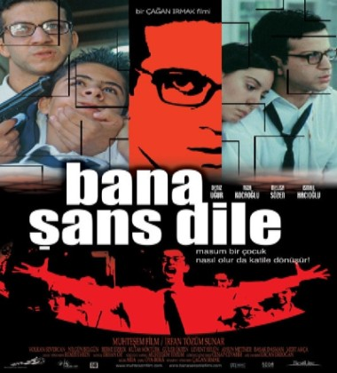
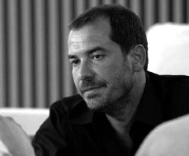

Yönetmen olarak ilk profesyonel eseri Günaydın İstanbul Kardeş (1998-2001) adlı tv filmi olan Türk sinemasının özgün,farklı ve etkili bir yönetmeni Çağan Irmak.Yönetmenden 2001 senesinde en başta kendisi
bile yaptığı işten pek memnun olmadığını açıkça belirtesede, ki bence hiç de fena olmayan Bana Şans Dile geldi.
Ancak ülke genelinde adının bilinmesini sağlayan proje rayting rekortmeni Asmalı Konak (2002-2003) dizisi oldu.Aynı yıl içinde
Mustafa Hakkında Herşey 'i çekti.Film konusu,kurgusu,çekim tekniği ve Fikret Kuşgan 'nın üst düzey oyuncuğu ile Türk sineması ile kendi sinemasının en önemli eserlerinden biridir.
 Irmak'ın bundan sonraki işi; kendi yaşamınıda farklı yönlerden derinden etkilediğini her fırsatta söylediği 1980 ihtilal döneminin
insanlarımız üzerinde yaptığı değişim ile tahribatın detaylı ve gerçekçi tasvirini hem tv ye hemde beyazperdeye yansıtmak oldu.
Aynı yıl yaptığı iki iş'de gerek izleyiciler, gerekse eleştirmenlerden tam not aldı.Çemberimde Gül Oya (2004-2005) ve Türk sinema tarihinin en çok
izlenen filmlerinden biri de olan Babam ve Oğlum. Babam ve oğlum ulusal ve uluslararası pek çok festivalden ödülle döndü.Böylelikle Fikret Kuşgan'la
birlikte art arda iki başarılı yapıma imza attılar.Tabi dede ve torun olarak, unutulmaz performans ile Çetin Tekindor ve Ege Tanman 'nın filme katkıları çok büyük.
Irmak'ın bundan sonraki işi; kendi yaşamınıda farklı yönlerden derinden etkilediğini her fırsatta söylediği 1980 ihtilal döneminin
insanlarımız üzerinde yaptığı değişim ile tahribatın detaylı ve gerçekçi tasvirini hem tv ye hemde beyazperdeye yansıtmak oldu.
Aynı yıl yaptığı iki iş'de gerek izleyiciler, gerekse eleştirmenlerden tam not aldı.Çemberimde Gül Oya (2004-2005) ve Türk sinema tarihinin en çok
izlenen filmlerinden biri de olan Babam ve Oğlum. Babam ve oğlum ulusal ve uluslararası pek çok festivalden ödülle döndü.Böylelikle Fikret Kuşgan'la
birlikte art arda iki başarılı yapıma imza attılar.Tabi dede ve torun olarak, unutulmaz performans ile Çetin Tekindor ve Ege Tanman 'nın filme katkıları çok büyük.


 Yönetmenin 2008 yılında 2 metropol insanın aşkına dair melankolisi Issız Adam vizyona girer.Ada ve Alper'in umutla karışık hüzünlü hikayesi olumsuz
eleştiriler alsada genel itibarı ile pek sevilir.Kanımca sinemamızdaki en iyi "kaybeden" filmlerinden biridir Issız Adam.Sonraki yıl tuhaf ve dramatik bir anne-oğul ilişkisini anlattığı
Karanlıktakiler'i çeker Çağan Irmak.Benim düşüncem yönetmenin Mustafa Hakkında Herşey ile birlikte,çektiği en kişsel iki filminden biridir.
Adı gibi son derece karanlık,depresif,genel sinema izleycisine pek de hitap etmeyen(Bunu söylememdeki neden filme dair olumsuz eleştirilerin büyük kısmının o kesimden gelmesi)ancak belli düzeyde sinema kültürüne sahip
olanların beğendikleri bir film oldu.Benim ise en beğendiğim filmidir Irmak'ın.
Yönetmenin 2008 yılında 2 metropol insanın aşkına dair melankolisi Issız Adam vizyona girer.Ada ve Alper'in umutla karışık hüzünlü hikayesi olumsuz
eleştiriler alsada genel itibarı ile pek sevilir.Kanımca sinemamızdaki en iyi "kaybeden" filmlerinden biridir Issız Adam.Sonraki yıl tuhaf ve dramatik bir anne-oğul ilişkisini anlattığı
Karanlıktakiler'i çeker Çağan Irmak.Benim düşüncem yönetmenin Mustafa Hakkında Herşey ile birlikte,çektiği en kişsel iki filminden biridir.
Adı gibi son derece karanlık,depresif,genel sinema izleycisine pek de hitap etmeyen(Bunu söylememdeki neden filme dair olumsuz eleştirilerin büyük kısmının o kesimden gelmesi)ancak belli düzeyde sinema kültürüne sahip
olanların beğendikleri bir film oldu.Benim ise en beğendiğim filmidir Irmak'ın.